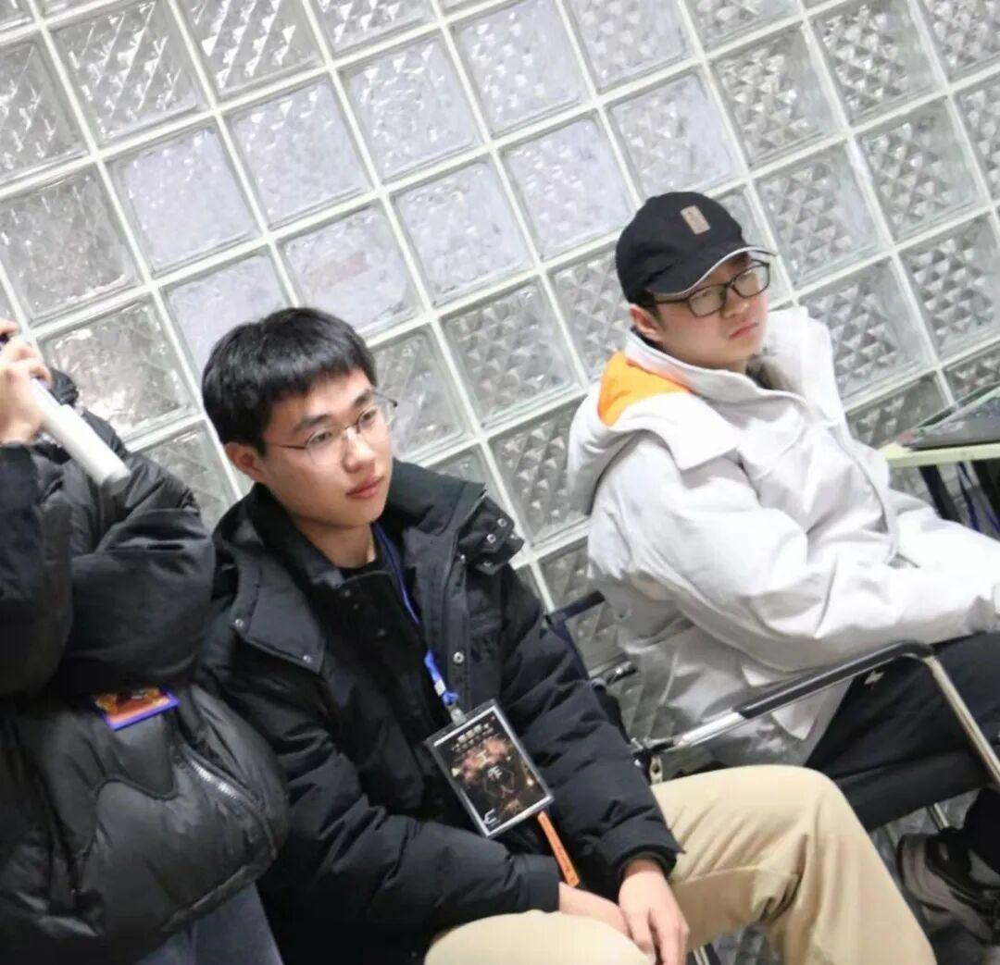

使用小程序
视觉组是整个队伍的眼睛，负责对目标进行识别，预测，使敌方机器人受到有效打击，他们就像“开了挂”眼睛一样，视野囊括全局，便于己方制定计划。

为了更好了解视觉组，我们特地采访了视觉组的学长。
刘佳旺学长：首先是知识其次就是交到很多朋友，然后还有了一些完成项目的经验，自身学习的能力也有提升，这些都是从这收获的宝贵的财富。
勾伯涛学长：在这里不仅可以提升你的算法能力，还可以提升你的数学能力及逻辑思维能力，在这的学习中我时常感到困惑和烦恼，但咬咬牙坚持下来，结果总是好的。
刘佳旺学长：我觉得视觉组是一个看似有趣实则有些枯燥，需要耐心，也很忙碌，苦中作乐的地方。
经过了一个假期的学习，让我们看看大一的萌新有什么收获。
柴少乾：学习了opencv，增强了自学能力和查找资料的能力，并且丰富了假期时间，了解了很多书本上没有的知识。
他们是机器人的眼睛
是狂风暴雨中的灯塔
是夜晚黑幕上闪烁的星屑
指引着机器人发出最精准最有效的攻击
令敌人胆寒
有关他们的故事还会在这个春天继续发展
希望我们的电协会在这些新鲜血液的注入下
延续辉煌
文字|阿文
排版|阿文
审核|一只大苗